Iide
Iide · Yamagata
Iide
Highlighted on the Yamagata map.
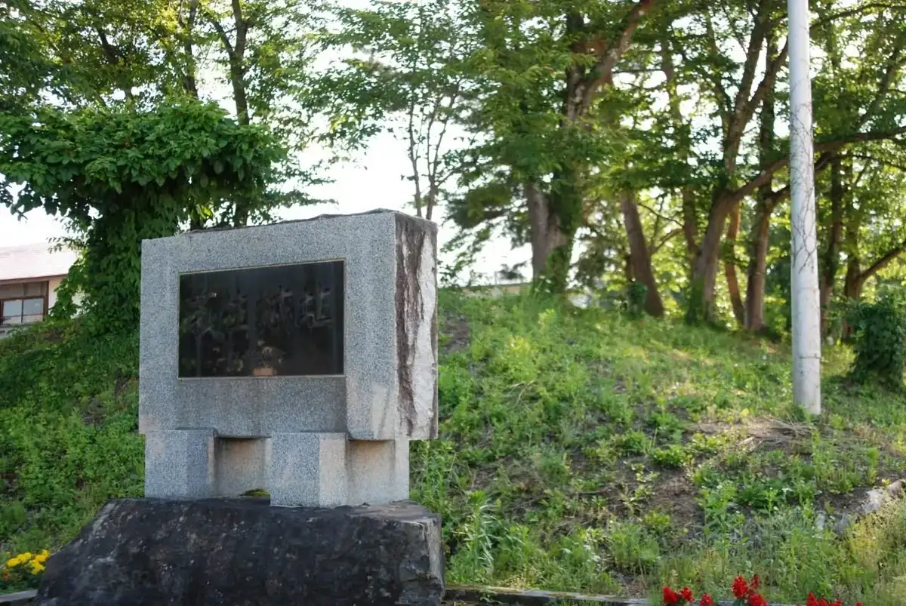
Stay
ホテルスロービレッジ 飯豊
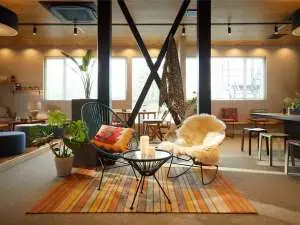
Hoterusuroobirejji Iide
Hotel in Iide, Yamagata.
いいで添川温泉しらさぎ荘
Iide Soekawa Onsen Shirasagi Sou
Onsen lodging in Iide, Yamagata.
野鳥ノジコに逢える郷 白川温泉 白川荘
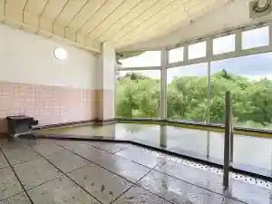
Yachou Nojiko Ni Ae Ru Sato Shirakawa Onsen Shirakawa Sou
Onsen lodging in Iide, Yamagata.
Dining
道の駅 いいで
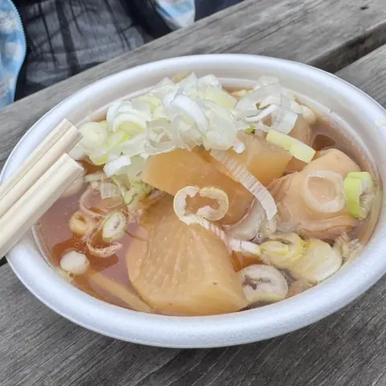
Michi No Eki Iide
Roadside-station eatery in Iide, Yamagata.
道の駅 いいで めざみの里観光物産館 レストラン わいわいパレット
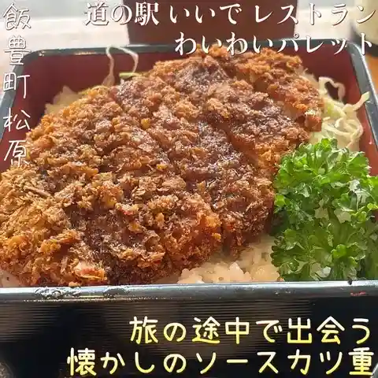
Michi No Eki Iide Mezamino Sato Kankou Bussan Kan Resutoran Waiwai Paretto
Shokudo diner in Iide, Yamagata.
白川温泉 白川荘
Shirakawa Onsen Shirakawa Sou
Inn restaurant in Iide, Yamagata.
肉のすがい
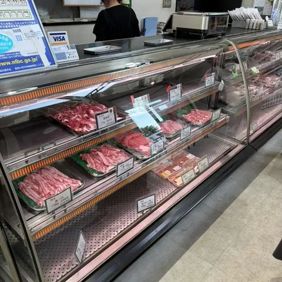
Niku Nosugai
Horse-meat restaurant in Iide, Yamagata.
香月
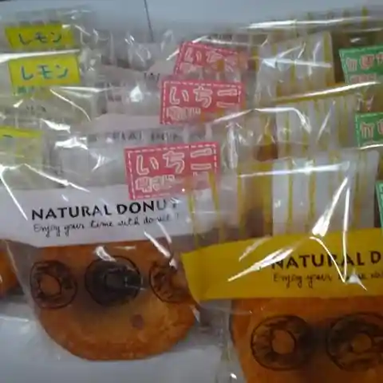
Kougetsu
Cake shop in Iide, Yamagata.
湯の華
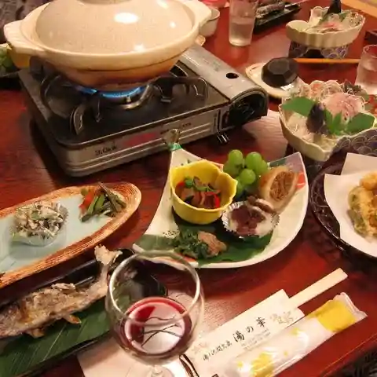
Yu No Hana
Inn restaurant in Iide, Yamagata.
農家レストラン エルベ
Nouka Resutoran Erube
Pasta restaurant in Iide, Yamagata.
ぽたじぇ
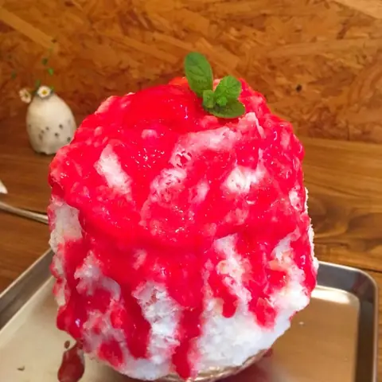
Potajie
Café in Iide, Yamagata.
神乃湯ホテル
Jinno Yu Hoteru
Hotel restaurant in Iide, Yamagata.
田中屋
Tanaka Ya
Onigiri shop in Iide, Yamagata.
さかい食堂
Sakai Shokudou
Shokudo diner in Iide, Yamagata.
手打ちそば 高峰そば工房
Teuchi Chisoba Kouhou Soba Koubou
Soba restaurant in Iide, Yamagata.
いろり
Irori
Inn restaurant in Iide, Yamagata.
叶で～る
Kanou De ~ Ru
Café in Iide, Yamagata.
まごころ食堂
Magokoro Shokudou
Yoshoku (Western-style) restaurant in Iide, Yamagata.
焼肉居酒屋 和楽美苑
Yakiniku Izakaya Wagaku Bi En
Yakiniku (grilled meat) restaurant in Iide, Yamagata.
夕月
Yuuzuki
Yakiniku (grilled meat) restaurant in Iide, Yamagata.
菓子の丸屋
Kashi No Maruya
Japanese sweets shop in Iide, Yamagata.
十割そば きはる
Juu Wari Soba Kiharu
Soba restaurant in Iide, Yamagata.
Sights
Iide Michi-no-Eki
A products hall on Route 113, midway between the Sea of Japan and the Pacific, selling local souvenirs, folk crafts, sake and fresh vegetables and fruit. The restaurant is popular for its Yonezawa beef bowl and Yonezawa ramen.
Shirakawa Dam Kogan Park
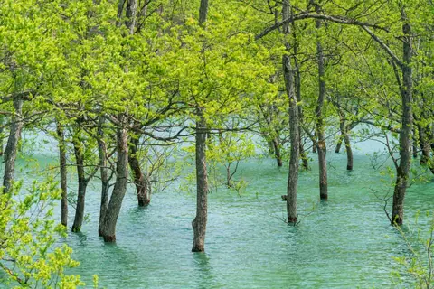
This is a park around Lake Shirakawa formed by Shirakawa Dam.
Shirakawa Onsen
Why don't you take a break at the quiet lakeside at the foot of Mt.
Donden-daira Snow Park
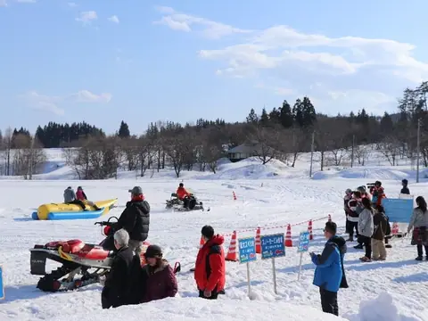
A snow park with snowmobile rides, thrilling banana-boat runs and a giant snow slide, plus snowshoe walks and target-throwing games; guided snowmobile forest rides are available for an extra fee.